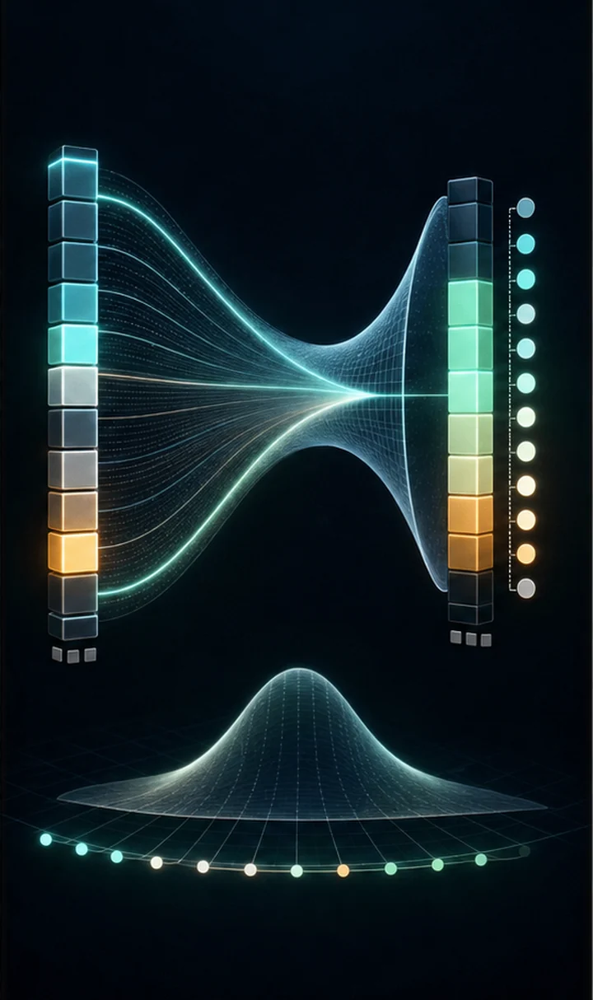

Now we solve the same bigram task with a neural network trained by gradient descent — and it converges to the same answer the counting found. Two different methods, one truth.
This introduces the permanent LLM toolkit: softmax (scores → probabilities) and cross-entropy loss (the universal next-token objective). Counting is the closed form; gradient descent is the general tool that keeps working when models get too complex to count.
Here the bigram is learned instead of counted. The model maps a one-hot input through a weight matrix to logits, which softmax turns into a probability distribution. Training minimizes cross-entropy — the negative log-probability assigned to the true next token. Minimizing cross-entropy is identical to maximizing likelihood, the very objective the counting model solves in closed form — which is why the two converge to the same answer.
The gradient of softmax-plus-cross-entropy is famously clean: predicted − actual. Each row of the weight matrix is effectively learning the log-probabilities of the next token (a per-row logistic regression). The point isn't that gradient descent beats counting here — it ties it — but that gradient descent is the general tool that keeps working once the model is too complex to count.


import numpy as np
WORDS = [
"emma", "olivia", "ava", "isabella", "sophia", "mia", "amelia", "harper",
"liam", "noah", "oliver", "william", "james", "benjamin", "lucas", "henry",
"anna", "anya", "maria", "elena", "nina", "sara", "leo", "max", "ella",
]
CHARS = ["."] + sorted("abcdefghijklmnopqrstuvwxyz")
STOI = {c: i for i, c in enumerate(CHARS)}
ITOS = {i: c for c, i in STOI.items()}
VOCAB = len(CHARS) # 27
def build_dataset(words):
"""Flatten all words into (input_char, target_char) index pairs."""
xs, ys = [], []
for word in words:
symbols = ["."] + list(word) + ["."]
for current, nxt in zip(symbols, symbols[1:]):
xs.append(STOI[current])
ys.append(STOI[nxt])
return np.array(xs), np.array(ys)
def one_hot(indices, n):
"""Turn a list of indices into rows of 0s with a single 1 (the 'on' char)."""
out = np.zeros((len(indices), n))
out[np.arange(len(indices)), indices] = 1
return out
def softmax(logits):
"""Turn raw scores ('logits') into probabilities that sum to 1 per row."""
logits = logits - logits.max(axis=1, keepdims=True) # stability trick
exp = np.exp(logits)
return exp / exp.sum(axis=1, keepdims=True)
def train(xs, ys, epochs=200, lr=20.0):
"""Train a single weight matrix W mapping input char -> next-char scores.
W has shape (27, 27): one column of scores per possible next character.
Because the input is one-hot, `X @ W` simply selects the relevant row of W,
so this net is literally learning a probability table — the same table #1
counted, but discovered through gradient descent.
"""
rng = np.random.default_rng(0)
W = rng.normal(size=(VOCAB, VOCAB))
X = one_hot(xs, VOCAB) # (N, 27)
n = len(xs)
for epoch in range(epochs):
# --- Forward pass ---
logits = X @ W # (N, 27) raw scores for each next char
probs = softmax(logits) # (N, 27) probabilities
# --- Cross-entropy loss: -log(probability assigned to the TRUE char) ---
loss = -np.mean(np.log(probs[np.arange(n), ys] + 1e-9))
# --- Backward pass ---
# Gradient of softmax + cross-entropy is beautifully simple:
# (predicted prob - 1 for the true class), averaged over the batch.
d_logits = probs.copy()
d_logits[np.arange(n), ys] -= 1
d_logits /= n
d_W = X.T @ d_logits
# --- Gradient descent update ---
W -= lr * d_W
if epoch % 20 == 0:
print(f"epoch {epoch:4d} loss {loss:.4f}")
return W
def generate(W, rng, max_len=20):
"""Sample a new word from the trained net, one character at a time."""
index = 0
out = []
for _ in range(max_len):
logits = one_hot([index], VOCAB) @ W
probs = softmax(logits)[0]
index = rng.choice(VOCAB, p=probs)
if index == 0:
break
out.append(ITOS[index])
return "".join(out)xs, ys = build_dataset(WORDS)
W = train(xs, ys)
print("\nGenerated names:")
rng = np.random.default_rng(0)
for _ in range(100):
print(" " + generate(W, rng))epoch 0 loss 3.8114 epoch 20 loss 1.8562 epoch 40 loss 1.6872 epoch 60 loss 1.6409 epoch 80 loss 1.6212 epoch 100 loss 1.6104 epoch 120 loss 1.6037 epoch 140 loss 1.5990 epoch 160 loss 1.5956 epoch 180 loss 1.5931 Generated names: ma aryanjar o naria a menaxnnnna njabes liliar m oler h ja a benamavelivesa mtzphenolllucaso oph wisa openivann n nja o hax ellelenjama olucamia s olla amamm o haber erya wiarphiviva mia sam liax anya belilucana an hiasas a oliamamabeliarbm wiariny oa wia r mis oa iia nr miviaxjany oleria a iam sarya merisuca nilana olivama ma s la sdlen minn enax amia mma olia am wia eolla lia s openrphinya n ia s a wis lucnjarphemellenjana mamgtwia eolesahia ellliames ber beria llelia nra emenamenamemahenamma o opeliax wiariaveria la innamayar a ia nr lina nja ia mar mens a